Variegation
Ceramic glaze variegation refers to its visual character. This is an overview of the various mechanisms to make glazes dance with color, crystals, highlights, speckles, rivulets, etc.
Key phrases linking here: variegation, variegators, variegating, variegate - Learn more
Details
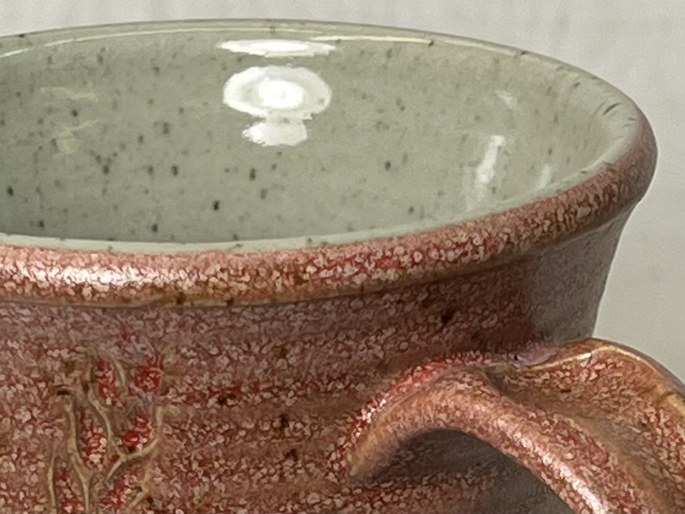
Multiple kinds of glaze variegation
The inside glaze of this cone 10 reduction fired mug is a base transparent glossy, G1947U. It has no additives to color, opacify or variegate it. That being said, the speckled body is making for a more interesting aesthetic on that inside surface. The outside glaze is a far different story. It is a base - a silky matte, G2571A. But it has additions of 3% titanium dioxide and 6% Mason 6021 red stain (this version is numbered G2571D). Of course the red coloration is from the stain. But the titanium is making the visual magic here, it is both an opacifier and a variegator. It is clearly producing phase changes and crystallization. One of the glass phases is redder and more transparent (the brighter red spots). Another phase is a much lighter opaque pink.
This is a visual property of fired ceramic glazes, especially of so-called 'reactive glazes' that potters like to use. Strictly speaking, ariegated glazes contrast with those having simple variation - the latter vary in shade according to thickness whereas the former vary in character (color, matteness, crystallization, transparency, melt fluidity, etc.). Variegated glaze can be temperamental and difficult to keep consistent, so they are less useful in industry. Potters who work in reduction-fired high-temperature stoneware come by these quite easily as a natural part of the process. This is because raw natural materials, with particles of widely varying size, chemistry and mineralogy, melt more easily at high temperatures creating a melt concoction that solidifies into surfaces having all sorts of crystal, rivulet, speckle and color variations for light to dance on.
But can such glazes be made for lower temperatures in oxidation? Yes. Option 1 is to just buy them from the endless selection of prepared commercial products! Stop reading here if you can afford and want to do that. Option 2 is to make your own, that is what this page is about. But there are multiple wrong ways to approach this. An example is blindly mixing hundreds of recipes from books and web pages in the hope of scaring up a good glaze or two. Not a good idea, better to know the 'mechanisms' of the various kinds of variegation, then inject these into base glazes that already work for you.
Consider an example of the vase on the cover of the Mastering Cone Six Glazes book by Ron Roy and John Hesselberth. The glaze "dances" with a number of different kinds of variegation (e.g. crystallization, rivulets and opacity variations associated with phase changes, and speckling). Look closer to see the reason: Melt fluidity. Notice how it runs down to the shoulder. All kinds of things happen in glazes that melt this much. In comparing the chemistry of this and others with a typical cone 6 transparent the difference becomes obvious: Much higher boron (B2O3). Boron melts big-time at cone six! Add some rutile and iron to a fluid base like this and all kinds of things happen.
Consider again the term 'melt fluidity': A melt fluid glaze is one that melts more than normal, it runs like off the ware. However, at lower temperatures highly-fluid glazes often exact a price: Crazing. This is because typical fluxes have high thermal expansion. However, there is a mitigation: Boron. Boron is an oxide contributed by most frits and Gerstley Borate, colemanite and ulexite. It melts like a super-flux yet forms a glass-like silica. And, it has a really low thermal expansion.
Consider some variegation mechanisms.
Color
The obvious ingredient in any variegation is the addition of a color (or ceramic stain).
Color highlighting
As noted above, strictly speaking, this is 'variation' not 'variegation'. But it is very often one of the mechanisms of the latter. Varying the thickness of a transparent (or partly opacified) colored glaze varies the intensity of color with depth (e.g. where the layer thins on the edges of sharper contours). Thickness variations can be achieved by pouring, double-dipping, brushing, waxing, and incising techniques.
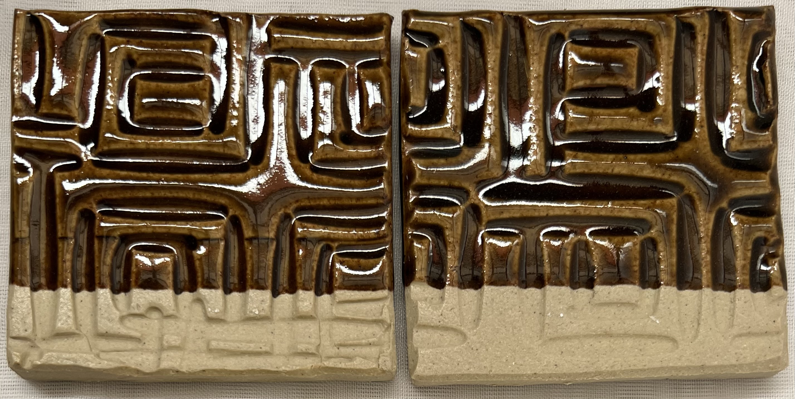
Simple example of color-variation-by-thickness in a honey glaze
This is GA6-B, a transparent amber glaze at cone 6. The color darkens in the recesses as a simple function of thickness.
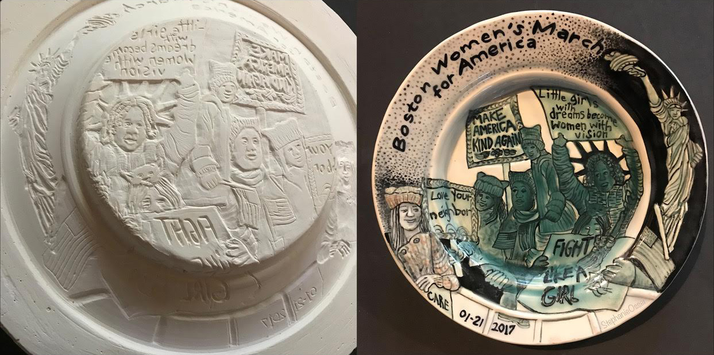
Plate by Stephanie Osser - Color highlighting by thickness variation
"Émail ombrant" (French for “enamel shadow”) is a pottery-decorating technique developed in France in the 1840s (at the Rubelles factory by Baron A. du Tremblay). Designs were etched or stamped into the pottery and a transparent colored glaze, in this case green, was applied thickly enough to re-level the surface. The varying depths produce colour highlighting. The design appears shadowy, hence the name. Stephanie calls these plates “Girls on the March”, they were inspired by parents who supported their girls with dynamic signage at the Boston of “Women on the March” rally in 2017.
Boron Blue
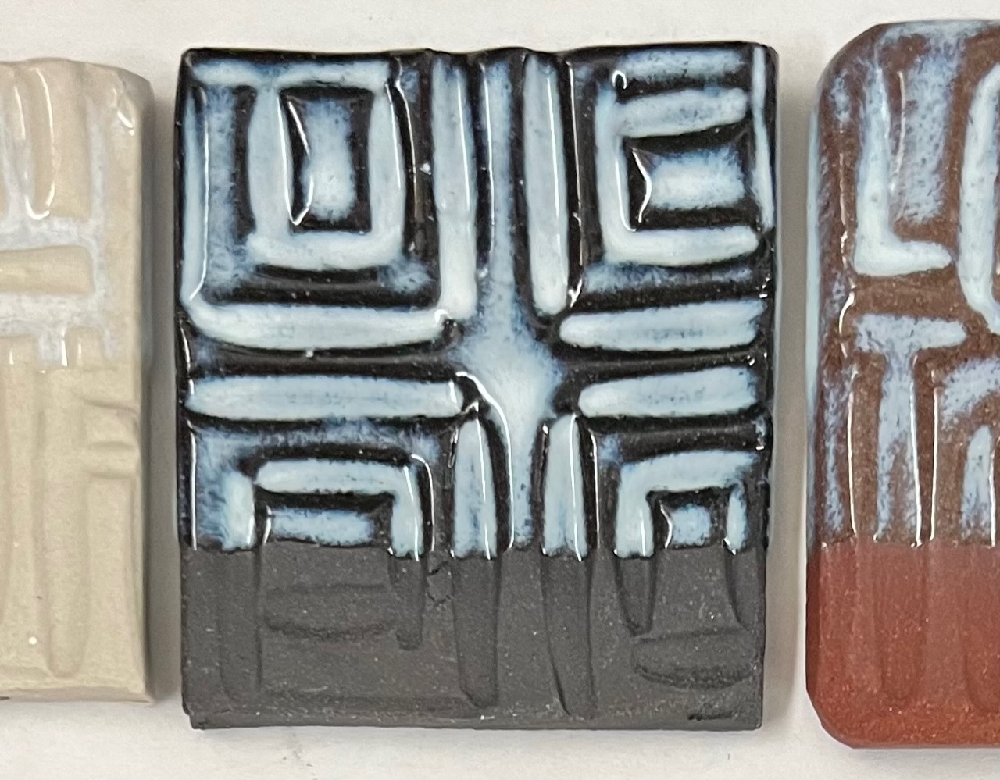
This boron blue effect depends on three things:
A dark body, variations in thickness, the right chemistry
This is G2826A3, a transparent amber glaze at cone 6 on white (Plainsman M370), black (Plainsman 3B + 6% Mason 6666 black stain) and red (Plainsman M390) stoneware bodies. When the glaze is thinly applied, it is transparent. But at a tipping-point-thickness, it generates boron-blue that transforms it into a milky white. Glazes that are very glassy but on the edge of structural instability do this. So they are not good for functional ware.
This is an adjustment to the 50:30:20 Gerstley Borate base recipe (historically used for reactive glazes, often on functional surfaces! This cuts B2O3 and adds significant SiO2. But it still has double the boron of a typical functional glaze. While the chemistry of the original was within the territory of boron blue development (relatively low Al2O3), this one is better because of the increased SiO2 (the high MgO:CaO ratio is likely also helping). Boron blues like the lower Fe2O3 content or Gillespie Borate. One more factor: I am using 325 mesh silica here, it dissolves in the melt better.
Rutile Glazes
Wherever you hear potters talking about reactive glazes you will hear the phrase "rutile glaze". Rutile is a natural mineral that is high in titanium and iron and it does amazing things in many types of glazes.
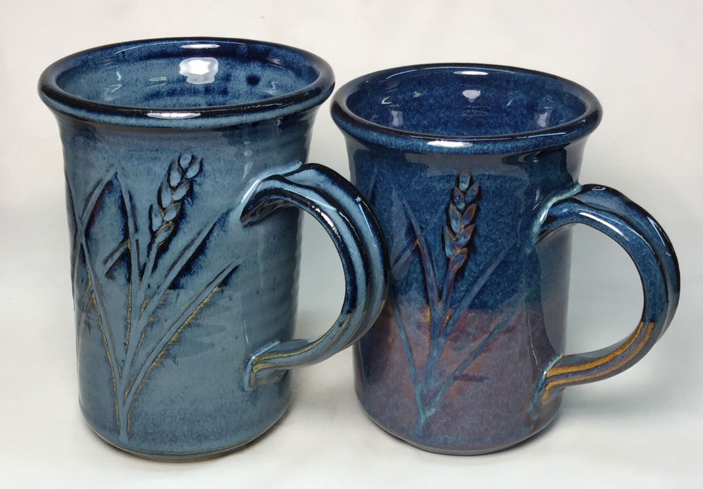
A rutile addition makes these Alberta Slip and Ravenscrag Slip "floating blue" glazes produce varying shades of blue and opacity with differences in thickness and base clay color
Surface Crystal Growth
Glazes of high melt fluidity often have almost no Al2O3 (in their chemistry), they can be so fluid that a bowl or catcher glaze is needed to deal with the runoff. Fluid glazes like to form microcrystals on the surface if cooling is slow enough. TiO2 materials like titanium dioxide and rutile seed crystal networks and encourage their growth (of course they can alter the color. High calcium and boron levels encourage the formation of calcium-borate crystals. The addition of up to 4% tin to these can magnify the effect. Small amounts of lithium (e.g. 1%) can have a remarkable variegating effect on rutile glazes, especially when colorants like iron are present.
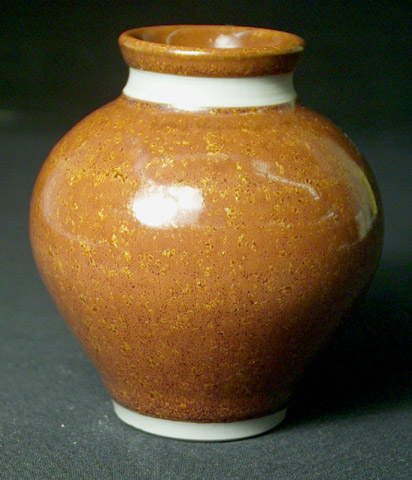
Reduction high temperature iron crystal glaze
This is what about 10% iron and some titanium and rutile can do in a transparent base glossy glaze (e.g. G1947U) with slow cooling at cone 10R on a refined porcelain.
Oxide Saturation
Certain colorants (like iron, copper, manganese) and stains can be added in higher-than-normal amounts to fluid glazes to produce a completely saturated and metallic fired surface. This phenomenon is akin to the precipitation of sugar crystals while cooling a super-saturated water solution. In this example, 8% iron has been used. The suitability of such glazes for functional ware is, of course, dependent on the colorant used.
Photo not found
or not published

An iron red cone 6 reactive glaze up close
G3948A is a cone 6 iron red. This sample is firing using the C6DHSC schedule. It is a reactive glaze in more ways than one. This closeup reveals just how much is happening on that fired surface. The recipe contains spodumene, an expensive material, but clearly it is worth it.
Specking Agent
You can add a coloring oxide that contains particulate matter that speckles the glaze surface. Manganese granular, illmenite, and granular rutile are examples. However, these materials are heavy and tend to settle in glazes that are too fluid. Coarser grades of iron oxide and cobalt oxide often produce small specks in unmilled glazes. Using pure metal powder or filings is also an option.
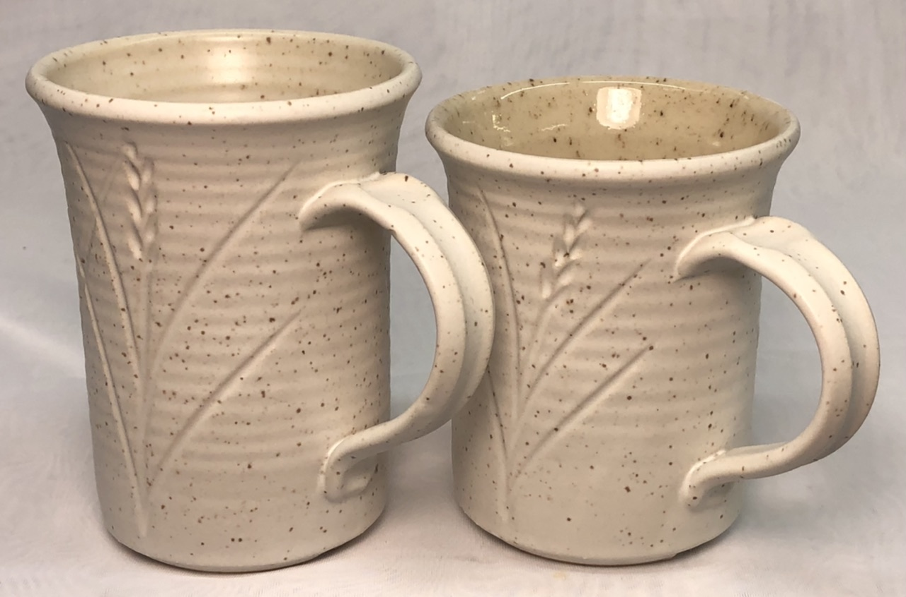
0.2% granular manganese was wedged into this buff cone 6 stoneware, the speckles make even plain white and transparent glazes look much more interesting
Multilayering
Layered glazes are molten liquids, they diffuse into each other and interact with each other chemically and mechanically. Vendors and manufacturers of bottled commercial glazes document the results of layering their glazes in brochures and on web pages. Because their products are heavily gummed and have a high water content, many layers can be applied without issues with running or crawling. Because they have broad product lines, they and customers are constantly discovering layering combinations that produce interesting effects. If you make your own glazes you can use their information to determine which ones might combine well for layering. For example, rutile blues or iron reds are often used as top layers over others, you can easily make both of these.
The extent to which variegation occurs with layering depends on many things. Examples are differences in melt thickness and relative thicknesses, fluidities and surface tension, how vertical the surface is, how many bubbles from the body are passing through, the time available and how it enables changes in chemistry at the boundary zone, etc.
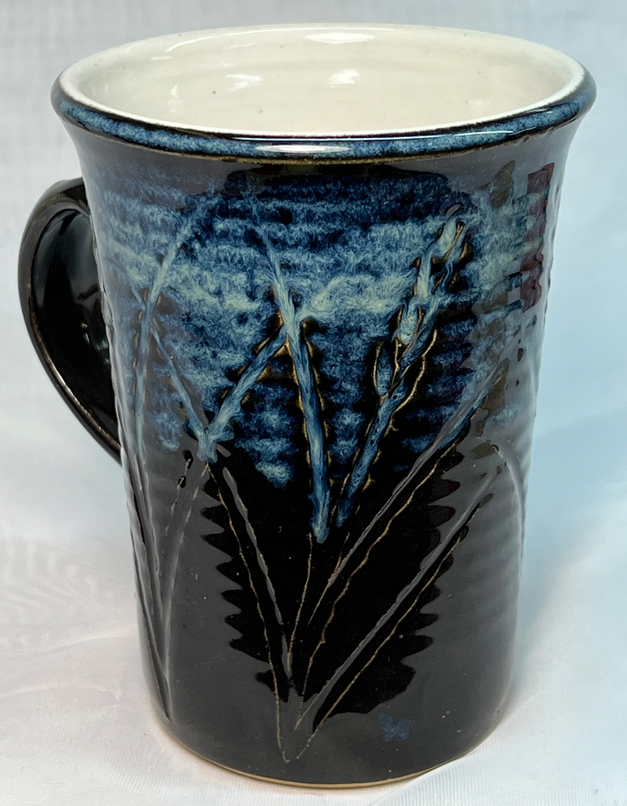
Glaze layering to get variegation
This is G3914A black, we mix it outselves as a base coat. A thick layer (one coat) of AMACO PC-20 Rutile Blue was brushed over the upper half of the outside. It was fired to cone 6 using the PLC6DS schedule.
Double layering of different glazes produces variegation well when the two have different melt fluidities. For example, when the lower layer is more fluid an upper stiffer layer will tend to break into islands revealing rivulets of the lower one. A subtle variation of this is to put a thin layer of a matte color (e.g. black) over a glossy layer of the same color, the effect can be something that no single-layer glaze can produce. Similarly, a contrasting colored fluid glaze over a stable one often has its own variegation surprises.
Another mechanism of double layering is the use of a lower layer that releases gases during the melting phase. During melting the lower one will percolate up through the top layer creating molten craters that later heal leaving the visual after-effects of the process.
Beware of crawling: If you are making your own glazes, double layering will often cause crawling (because the upper one can compromise the bond-with-the-body of the lower one when it shrinks during drying). Use a base coat glaze or bisque the first layer on.
Phase Differences
The glass matrix in a fired glaze can separate (or fail to mix) during melting. Glazes typically contain particles of multiple melters, each having its own softening range and melt characteristics. Consider a glaze containing Gerstley Borate, frit, feldspar, lithium carbonate and calcium carbonate. Each of these materials have drastically different melting characteristics. What is more, one of them, Gerstley Borate, is a mix of two separate minerals, ulexite and colemanite. Thus, the mechanically homogeneous mix of diverse particles that go into a kiln do not melt "as a team", their widely varying physical and chemical characters can create a non-homogeneous melt that also solidifies non-homogeneous. In fired variegated glazes, each "phase" in the micro-structure has variations in the way it reflects and refracts light, its color, degree of gloss, crystallization and downward flow. The visual result is variegation. When populations of material particles also have widely varying particle sizes the effect can be more amplified. Add a colorant and crystallizing agent and variegation is no surprise.

Phase separation caused by rutile
Combinations
Use combinations of the above to variegate surfaces even more. The popular Floating Blue cone 6 recipe is a good example. Its color varies with thickness so it highlights irregularities in the surface. Phase separation in the translucent matrix makes the color 'swirl' in patterns of blue. Titanium crystals in the matrix make it sparkle. The growth of calcium-borate crystals on the surface appear to float over a deep blue background. But remember, while this effect is popular among potters, it can come at a cost (e.g. pinholes, blisters, running)!
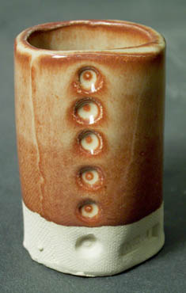
This is 86% Alberta Slip, 10% lithium and 4% tin fired at cone 6 in oxidation.
Some glazes greatly amplify thickness differences in a way that appears related to a number of the above factors. In these, there is a dramatic change in color and character with thickness differences. The classic Albany:Tin:Lithium glaze is a good example. The effect is related to a large extent to a non-opacifying reaction between the tin and iron that needs a certain thickness to manifest itself fully. This glaze also works well using boron as a flux (instead of lithium).
Physical Means
- Splatter-spraying or sponge-stippling a second layer of glaze with a contrasting color or shade (or the same color in a matter or glossier version). A trigger or pump-operated garden sprayer works well for this.
- Double-layering a fluid glaze over a more stable matte (spots tend to 'feather' into the underlying layer) or vice-versa (they tend to sit on top). Consider that while brightly colored variegated glazes look great, subtle variations can also be very effective. A good example is a glossy blue speckle or pattern on a matte blue background.
- Pre-fire ingots of a glaze of stiff-melting properties and then grind them into a coarse aggregate and mix this into a glaze slurry of fluid melting properties. Or do the opposite, make an aggregate of a fluid glaze and mix into a non-fluid. Add more variegation by contrasting the colors and degree of gloss or matteness. In order for the aggregate particles not to settle in the slurry it will have to have a high clay content and be fairly viscous and will require frequent stirring. Another approach would be to apply the aggregate particles to the surface of an already glazed piece. This can be done in a variety of ways (spray or spatter them on the surface adhering with a gum binder, sprinkle on before the underglaze dries, etc.). Ideally, the two glazes should be as similar as possible in thermal expansion to avoid internal stresses, you can match them using Digitalfire INSIGHT and glaze chemistry. Most potters would be surprised to find out how commonly this type of technique is used in industry, especially tile.
Related Information
Toilet bowl glaze vs. variegated glaze

This picture has its own page with more detail, click here to see it.
Most artists and potters want some sort of visual variegation in their glazes. The cone 6 oxidation mug on the right demonstrates several types. Opacity variation with thickness: The outer blue varies (breaks) to brown on the edges of contours where the glaze layer is thinner. Phase changes: The rutile blue color swirls within because of phase changes within the glass (zones of differing chemistry). Crystallization: The inside glaze is normally a clear amber transparent, but because these were slow cooling in the firing, iron in the glass has crystallized on the surface. Clay color: The mugs are made from a brown clay, the iron within it is bleeding into the blue and amplifying color change on thin sections.
Variegating effect of sprayed-on layer of titanium dioxide

This picture has its own page with more detail, click here to see it.
The base glaze (inside and out) is GA6-D Alberta Slip glaze fired at cone 6 on a buff stoneware. However, on the outside, the dried-on glaze was over-sprayed with a very thin layer of titanium and water (VeeGum can be used to help gel the sprayable titanium slurry and suspend it). The dramatic effect is a real testament to the variegating power of TiO2. An advantage of this technique is the source: Titanium dioxide. It is a more consistent source of TiO2 than the often-troublesome rutile. Another advantage is that the variegation can be selectively applied in specific areas or as a design. This effect should work on most glossy glazes having adequate melt fluidity.
Cone 10R variegation and crystal magic

This picture has its own page with more detail, click here to see it.
This is an example of crystallization in a high MgO matte. MgO normally stiffens the glaze melt forming non-crystal mattes but at cone 10R many cool things happen with metal oxides, even at low percentages. Dolomite and talc are the key MgO sources.
Why does this glaze variegate like this?
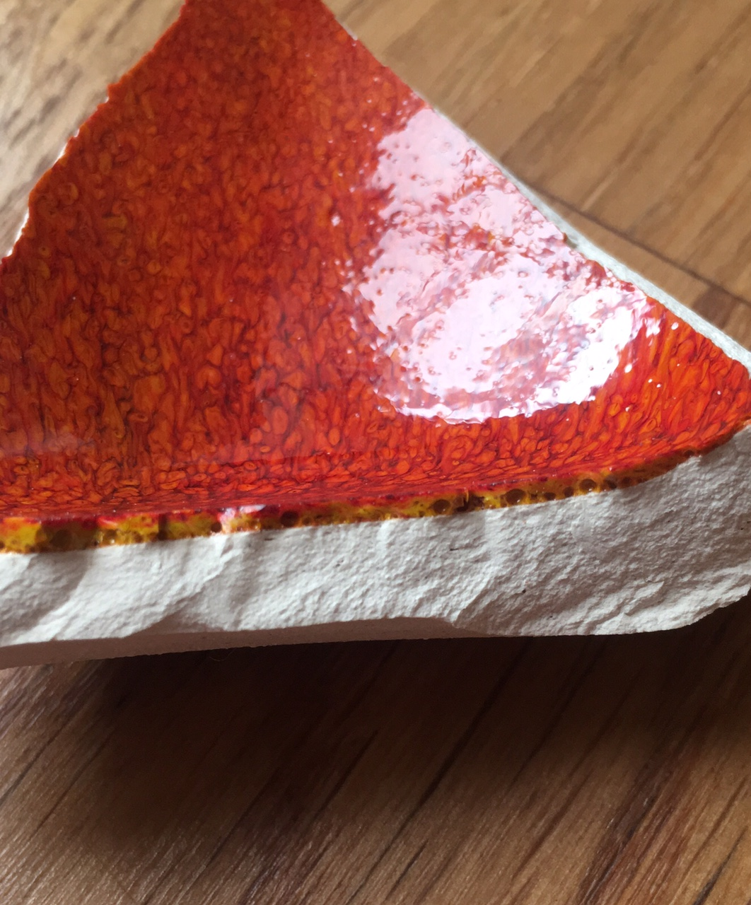
This picture has its own page with more detail, click here to see it.
This is a cone 10R copper red. First, it is thick. "Thick" brings it own issues (like running, blisters, crazing). But look what is under the surface. Bubbles. They are coming out of that body (it is not vitreous, still maturing and generating them in the process). The bubbles are bringing patches of the yellow glass below into the red above. Normally bubbles are a problem, but in this decorative glaze, as long as everything goes well, they are a friend.
Double layering of contrasting colors and melt fluidities
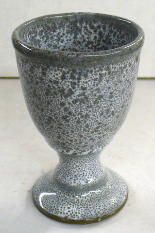
This picture has its own page with more detail, click here to see it.
A matte white having a viscous melt over a dark-colored more fluid-melt glaze at cone 6.
Closeup of oil spot glaze at cone 8
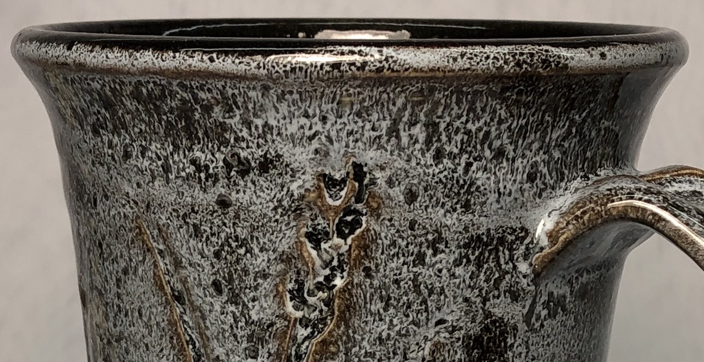
This picture has its own page with more detail, click here to see it.
The lower black glaze is a base coat G3914A Alberta Slip base (with 4% Mason 6600 stain). The white overglaze is G3912A with tin oxide opacifier, it was specially made for this purpose. Normally I would fire this combination at cone 6, but this time I tried cone 8. It is a little high for this clay body, but the glaze variegation is better.
Variegation gone too far!
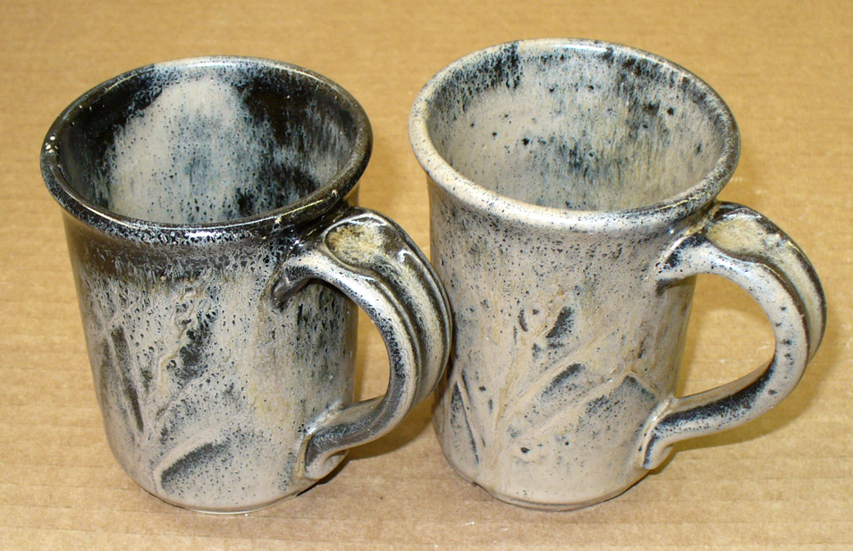
This picture has its own page with more detail, click here to see it.
This is Ravenscrag Slip Oatmeal layered over a 5% Mason 6666 stained glossy clear at cone 6. You have to be careful not to get the overglaze on too thick, I did a complete dip using dipping tongs, maybe 2 seconds. Have to get it thinner so a quick upside-down plunge glazing only the outside is the the best way I think. You may have to use a calcined:raw mix of Ravenscrag for this double layer effect to work without cracking on drying.
Links
| Glossary |
Rutile Blue Glazes
A type of ceramic glaze in which the surface variegates and crystallizes on cooling in the presence of titanium and iron (usually sourced by rutile) |
| Glossary |
Opacifier
Glaze opacity refers to the degree to which it is opaque. Opacifiers are powders added to transparent ceramic glazes to make them opaque. |
| Glossary |
Reactive Glazes
In ceramics, reactive glazes have variegated surfaces that are a product of more melt fluidity and the presence of opacifiers, crystallizers and phase changers. |
| Glossary |
Glaze Recipes
Stop! Think! Do not get addicted to the trafficking in online glaze recipes. Learn to make your own or adjust/adapt/fix what you find online. |
| Glossary |
Base Glaze
Understand your a glaze and learn how to adjust and improve it. Build others from that. We have bases for low, medium and high fire. |
| Materials |
Rutile
A raw TiO2-containing mineral used in ceramics to color and variegate glaze surfaces. |
| Materials |
Tin Oxide
Its principle use in ceramics is as an opacifier in glazes. It is very expensive. |
| Materials |
Zircon
|
| Articles |
Concentrate on One Good Glaze
It is better to understand and have control of one good base glaze than be at the mercy of dozens of imported recipes that do not work. There is a lot more to being a good glaze than fired appearance. |
| Properties | Glaze Variegation |
 PayPal | No tracking, No ads, No paywall, No transient content! Just organized, concise information constantly updated and improved. Was this helpful? Consider supporting me. |
| By Tony Hansen Follow me on        |  |
Got a Question?
Buy me a coffee and we can talk 

https://digitalfire.com, All Rights Reserved
Privacy Policy